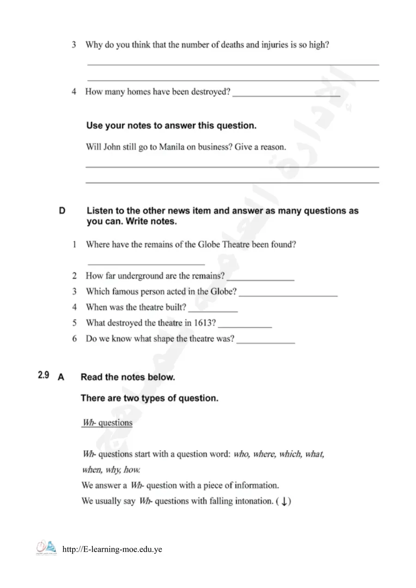

2.9 A Read the notes below. There are two types of question. Wh- questions Wh- questions start with a question word: who, where, which, what, when, why, how. We answer a Wh- question with a piece of information. We usually say Wh- questions with falling intonation. (↓) (WB p. 23) Yes/No questions Yes/No questions start with the verb to be or an auxiliary verb. Examples: Are you happy? | Do you want a cup of tea? | Can you tell me the time, please? They produce the answer Yes or No. We usually say Yes/No questions with rising intonation. (↑)
Practise asking both types of question. Your voice rises or falls on on word in the question. You will see (↓) or (↑) before the words where this happens. Say each question. 1 Who's your best (↓) friend? 2 Where does your best friend (↓) live? 3 What does your best friend like (↓) doing? 4 Does your best friend like (↑) sailing? 5 Does your best friend live (↑) nearby? 6 Does your best friend have a (↑) boat? B You are a reporter. You want to find information about someone for your newspaper. Match the information (A to E) to the questions (1 to 5), and write the correct letter in each box. A His occupation · B His favourite hobby · C Frequency of visits to restaurants · D His age · E His address 1 Does he live in this village? [ ] (↑)(↓) 2 Does he eat out often? [ ] (↑)(↓) 3 How old is he? [ ] (↑)(↓) 4 What does he do? [ ] (↑)(↓) 5 What does he like doing best? [ ] (↑)(↓) Say the questions above. Does your voice rise or fall? Circle the correct arrow.
on on word (تكرار حرف الجر on بدلاً من on one word)، وحُفظت حرفياً.C Work in pairs. Interview your partner about his/her family and note his/her answers in the table. My Partner: Name: | Age: | Address: | Kind of house: | Father's name: | Father's occupation: | Mother's name: | Mother's occupation: | Number of brothers: | His/their occupation (s): | Number of sisters: | Her/their occupation (s): | Other information:
[
{
"letter": "1",
"word": "Does he live in this village? (Intonation: ↑ rising)",
"ar": "سؤال عن السكن والعنوان",
"answer": "E"
},
{
"letter": "2",
"word": "Does he eat out often? (Intonation: ↑ rising)",
"ar": "سؤال عن تكرار الأكل في المطاعم",
"answer": "C"
},
{
"letter": "3",
"word": "How old is he? (Intonation: ↓ falling)",
"ar": "سؤال عن العمر",
"answer": "D"
},
{
"letter": "4",
"word": "What does he do? (Intonation: ↓ falling)",
"ar": "سؤال عن الوظيفة/المهنة",
"answer": "A"
},
{
"letter": "5",
"word": "What does he like doing best? (Intonation: ↓ falling)",
"ar": "سؤال عن الهواية المفضلة",
"answer": "B"
}
][
{
"label_ar": "1) الاسم والعمر والعنوان ونوع السكن (Wh- ↓)",
"placeholder": "What is your name? / How old are you? / Where do you live? / What kind of house do you live in?"
},
{
"label_ar": "2) الأب والأم ومهنتاهما (Wh- ↓)",
"placeholder": "What is your father's name? / What does he do? / What is your mother's name and occupation?"
},
{
"label_ar": "3) الإخوة والأخوات ومهنهم (Yes/No ↑ ثم Wh- ↓)",
"placeholder": "Do you have any brothers or sisters? How many brothers have you got? What do they do?"
},
{
"label_ar": "4) معلومات إضافية (Other information: هوايات/دراسة)",
"placeholder": "What do you like doing in your free time?"
}
]{
"wb_ocr_vs_image": "قُورنت صفحات WB ص 22–24 مع tesseract.js eng: أخرجت OCR أخطاء مثل 'Wi questions' و'¥és/No' و'zo be' و'és or No' و'(|)'، وصُحّحت جميعها بصرياً من wb-023.png وwb-024.png وwb-025.png؛ كما حُفظت الصيغ المطبوعة حرفياً ('on on word'، 'occupation (s)')."
}